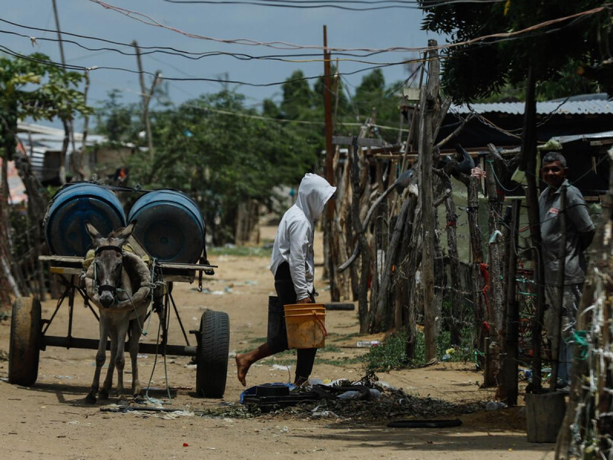
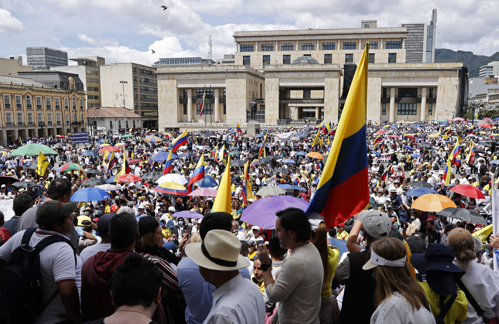
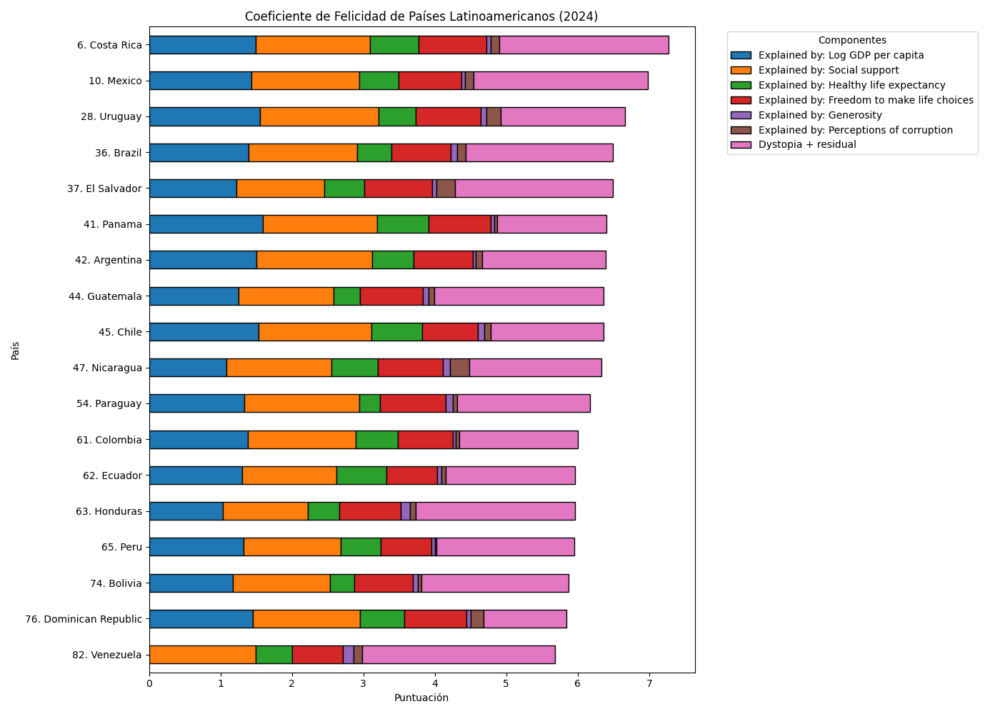
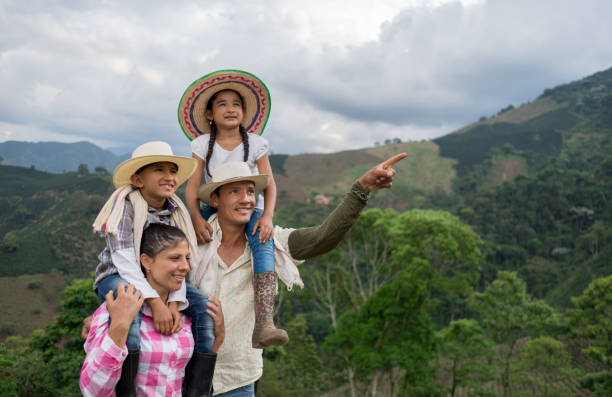

¿Es Colombia tan feliz como creemos?
Un análisis basado en datos del World Happiness Report 2024
Una percepción cultural de alegría
Colombia es reconocida internacionalmente como un país vibrante.
La música, el baile, el fútbol y la calidez humana forman parte de su identidad colectiva.
Desde el Caribe hasta el eje cafetero, el país proyecta una imagen de optimismo y energía social.
Sin embargo, cuando la felicidad se mide a través de indicadores estructurales como ingreso,
salud, apoyo social y confianza institucional, la narrativa se vuelve más compleja.
Desafíos estructurales y realidad social
Aunque Colombia posee una identidad resiliente, enfrenta desafíos persistentes.
La desigualdad económica, la informalidad laboral y la percepción de corrupción
afectan la estabilidad colectiva.
La polarización política y las tensiones sociales recientes han debilitado
la confianza en las instituciones, uno de los factores más determinantes
en los niveles de felicidad según el World Happiness Report.


Evolución histórica de la felicidad (2011–2024)
Entre 2011 y 2015, Colombia alcanzó uno de sus niveles más altos de felicidad.
Este periodo coincidió con crecimiento económico sostenido y expectativas positivas
frente al proceso de paz.
A partir de 2016 se observa una tendencia descendente que se profundiza entre 2019 y 2022,
periodo marcado por pandemia, crisis económica global y tensiones sociales internas.
En 2023 y 2024 se evidencia una recuperación parcial, reflejando resiliencia social.
Comparación regional: Latinoamérica 2024
En el contexto latinoamericano, Colombia se ubica en una posición intermedia.
Países como Costa Rica y Uruguay presentan mayores niveles de bienestar,
asociados a estabilidad institucional y confianza social.
Esto sugiere que la cultura alegre no es suficiente para sostener altos niveles
de felicidad si no se acompaña de condiciones estructurales sólidas.

Redes familiares y Resiliencia Social
Colombia demuestra resiliencia cultural, pero los datos revelan
que la felicidad sostenible requiere condiciones estructurales sólidas.
La identidad alegre es un activo social poderoso, pero no sustituye
la necesidad de estabilidad institucional, reducción de desigualdad
y confianza colectiva.
La felicidad no es solo una emoción.
Es un indicador de desarrollo humano.

Metodología y Fuente de Datos
Este análisis se basa en datos del World Happiness Report 2025,
el cual evalúa la felicidad a través de encuestas globales
y seis variables principales: PIB per cápita, apoyo social,
esperanza de vida saludable, libertad para tomar decisiones,
generosidad y percepción de corrupción.
Las visualizaciones fueron elaboradas conn Python utilizando
herramientas de análisis de datos, y posteriormente integradas
en esta página web para presentar los resultados de forma narrativa.